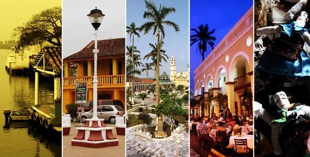

Tlacotalpan es una localidad y municipio del sureste del estado de Veracruz dentro de los límites de la Cuenca del Papaloapan, en México, su nombre significa “tierra partida”. Ubicado en la costa del Golfo de México, es conocido por su tradición pesquera y por los dos festivales anuales de música jarocha y décima que patrocina, especialmente interesante por formar un vínculo cultural e histórico entre la música Andalucía, del centro-occidente de África y de las culturas nativas de Mesoamérica. Es también un puerto fluvial, rodeado e irrigado por el río Papaloapan, que además posee en el municipio los ríos tributarios de San Juan y Tesechoacán; cuenta con una extensión de 646.51 km², relativo al 0.89% del territorio total del estado y se localiza a 90 km del puerto de Veracruz, a 110 km de la ciudad de Tuxtepec, a 203 km de la ciudad de Xalapa, capital del estado y a aproximadamente a 500 km de la Ciudad de México. El centro histórico de Tlacotalpan fue declarado como Patrimonio Cultural de la Humanidad por la Unesco en 1998.
